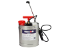
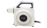
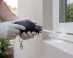

2022年
問題178 防虫・防鼠構造と防除に用いる機器に関する次の記述のうち，最も適当なものはどれか．
（1）ライトトラップは，長波長誘引ランプに誘引された昆虫を捕獲する器具である．
（2）ネズミの侵入防止のため，建物の外壁に樹木の枝が接触することを避ける．
（3）噴射できる薬剤の粒径は，ミスト機，ULV機，噴霧器の中で，ULV機が最も大きい．
（4）昆虫の室内侵入防止のため設置する網戸は，10メッシュ程度とする．
（5）ULV機は，高濃度の薬剤を多量散布する薬剤散布機である．
2022年
問題178 正解（2） 頻出度AAA
運動能力の高いクマネズミは樹木の枝を伝わって建物に侵入する．
防鼠構造について2022-178-1表に示す．
2022-178-1表 防そ構造（「防そ構造・工事基準案」より）
| 場所 | 条件 | 基準・基準値 | ||
| 土台 | 基礎 | 地下に一定の深さで入っていること | 60cm以上 | |
| 外側へのＬ字型曲がりを付けること | 30cm以上 | |||
| 床 | 通風口 | 金属網・金属格子を付けること | 目の間隔は1cm以下 | |
| 床下 | 地表までの間隔があること | 60cm以上 | ||
| 床束 | ねずみ返しを付けること | 張り出しは20cm以上 | ||
| ちゅう房 | コンクリート張りであること | 厚さ10cm以上 | ||
| 側壁 | 二重壁 | できるだけ採用しない．採用の場合は下部に横架材が入っていること | ||
| 床との接点 | 幅木を入れること | |||
| パイプとの接点 | 座金を付けること | |||
| ドア | 自動開閉装置を付けること | |||
| 周辺 | 隙間が小さいこと | 1cm以内 | ||
| 窓 | １階 | 下端と地表との距離を離すこと | 90cm以上 | |
| 下端の出っ張りを付けること | 25cm以上 | |||
| 外壁 | 全面 | ツタ等の植物をはわせたり，樹木の枝を接触させないこと | ||
| 換気口 | 自動開閉式羽板を付けること | |||
| 金属網・金属格子を付けること | 目の間隔は1cm以下 | |||
| 配管 配線 |
壁，天井・床等の貫通部分には座金を付けること | |||
| 床から離して立ち上げること | 30cm以上 | |||
| 下水溝 | 排水口 | 金属格子・金属網等のふたを付けること | 目の間隔は1cm以下 | |
| 溝 | 網トラップを付けること | 目の間隔は1cm以下 | ||
| 幅を広くすること | 20cm以上 | |||
| 勾配をつけること | 2～4/100 | |||
| 郵便受 | 発条カバーを付けること | |||
| 照明 | 天井からの間接照明では，天井との間に隙間を作らないこと | |||
| シャッタ | 天井内に収納庫を設けること | |||
| 巻き取りチェーンは収納庫の外部とすること | ||||
| 天井裏 | 防火区画は基礎構造まで完全に遮へいされ，天井部分に隙間がないこと | |||
| 食堂 | 椅子 | 作り付けの場合，裏側は床下端まで全面張りとする | ||
-(1) ライトトラップ（殺虫機）の誘虫ランプは370nmの短波長である．誘引した昆虫をファンで吸引して捕虫ネットで捕獲するファン式ライトトラップと，粘着紙に付着させる粘着式ライトトラップがある．
誘虫灯の周りに粘着シートがセットされた粘着式殺虫機（2022-178-1図）は，害虫の死骸が周囲に落ちることがないので，店舗内で使うことができる．
2022-178-1図 粘着式殺虫機

出典 朝日産業株式会社
https://asahi-sg.co.jp/products/mushipon-mpx2000/ を基に作成
-(3) ミスト機，ULV機，噴霧器の中では，ULV機の噴射する粒径が最も小さい（2022-178-2表参照）．
2022-178-2表 薬剤散布機器
| 噴霧器（全自動噴霧器） 2022-178-2図 |
100～400μm 程度の粒子を処理する場合に用いる．乳剤や油剤をゴキブリ防除の目的で壁面に処理する場合などにPCO によって汎用される．平面やコーナーに散布するのを残留噴霧，隙間（クラック）や割れ目（クレビス）に注入するのを隙間処理と呼ぶ．噴霧薬剤の噴射パターンには扇形，直線型，中空円錐型がある． |
| ミスト機 | 送風装置とノズル先端の衝突板で20～100μm程度の粒子を噴射する機器である．空間処理用で，汚水槽，雑排水槽等の蚊やチョウバエの成虫の防除に多く使用される． |
| 煙霧機 | 0.1～50μmの粒子．油剤に熱を加え気化させ，室内空間を飛翔する害虫に直撃させる空間処理用である．電熱式やガソリンエンジン式のものがよく使用される． |
| ULV機 （Ultra Low Volume機） 2022-178-3図 |
粒子は5～20μm．高濃度の薬剤を少量処理するのに用いられる．専用の水性乳剤を，原液のまま，あるいは2～4 倍に希釈して使用する．飛翔昆虫用（空間処理用）なので，残留効果は期待できない． |
| 散粉機 | 粉剤の散布に用いる．手動式の散粉機（2022-178-4図）は，隙間処理で細かな部分に使用するときに便利である．床下など，ある程度の到達距離が必要な場合には，電動散粉機を用いる． |
| 三兼機 | 油剤・粉剤・粒剤兼用の散布機である． |
2022-178-2図 全自動噴霧器の例

出典 モノタロウ（メーカー丸山製作所）
https://www.monotaro.com/g/01017347/#
2022-178-3図 ULV機の例

出典 株式会社イーライフ
https://www.elife.jp.net
2022-178-4図 手動式の散粉機

出典 アマゾン
https://www.amazon.co.jp
-(4) 昆虫の侵入防止の網戸は20メッシュ※より細かい網目とする．
※ メッシュ：網目を表わす単位で，25.4mm（1インチ）1辺間にある目数をいう．